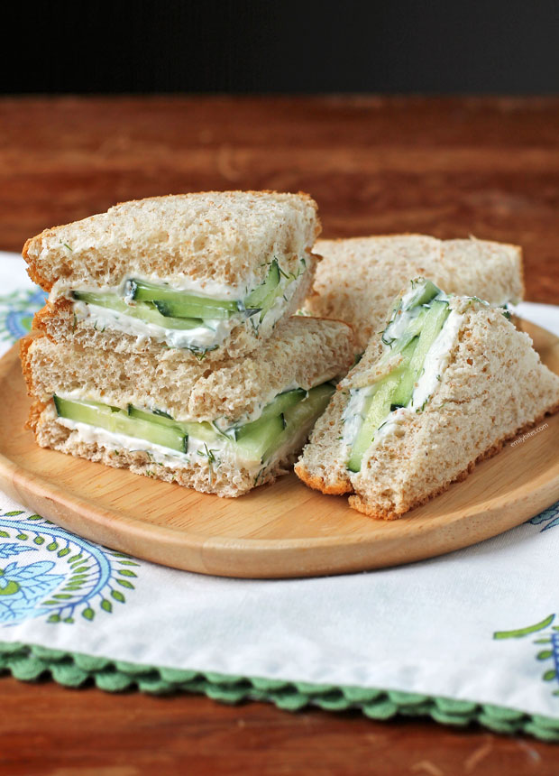

Recipe Book
Cucumber Sandwiches
cream cheese and cucumbers in between two slices of white bread
ingredients
- 1/2 cucumber
- loaf of sliced white bread
- salt and pepper to taste
- 4 tbsp cream cheese
- dill (optional)
steps
- chop cucumbers into thin slices
- lay cucumbers on paper towels and dry them off
- slather cream cheese on one side of each slice of bread
- lay a thin layer of cucumber slices on each slice, on top of the cream cheese
- sprinkle on dill if desired
- put 2 slices together, cucumber sides together
- cut crusts off and cut into fourths
